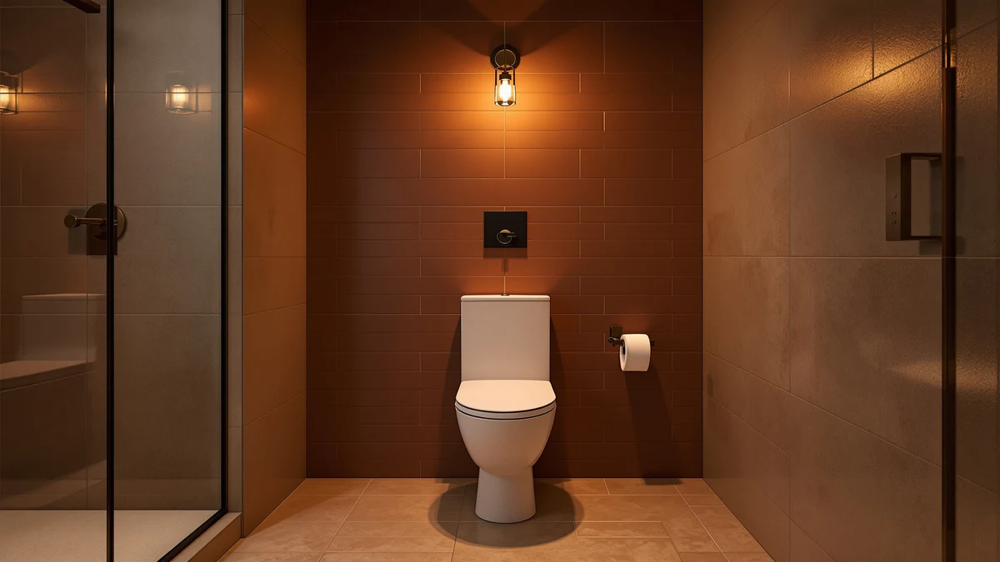

Kohler 4733-RL-0 Glenbury ReadyLatch Quiet Close Elongated Toilet Seat Review (2026): Worth It?


Quick Answer
Our Kohler 4733-RL-0 Glenbury ReadyLatch quiet-close elongated toilet seat review found a straightforward elongated seat whose ReadyLatch hinges and quiet-close lid solve the two most common toilet-seat complaints, loose mounting and a slamming lid, without pushing the price past $42.41. It costs about the same as the Drive Medical, Centoco, and Wooden alternatives covered below, so the decision mostly comes down to which specific feature, elongated fit, heavy-duty hinges, or raised seating, matters most in your bathroom.
Our pick: KOHLER 4733-RL-0 Glenbury ReadyLatch Quiet, $42.41 Check Price on Amazon
Things to Know Before You Buy
- The Kohler 4733-RL-0 Glenbury ReadyLatch fits elongated bowls only, so measure your existing seat before you order.
- ReadyLatch hinges let you remove the seat for cleaning without tools, a detail the Centoco and Wooden alternatives below do not offer.
- At $42.41, it costs about the same as the Drive Medical ($42.18) and Centoco ($42.66), so price is not the deciding factor between these four seats.
- Plastic and wood construction keeps it lighter than a stainless-hinge commercial seat, which matters if you remove it often for cleaning.
This Kohler 4733-RL-0 Glenbury ReadyLatch Quiet Close Elongated Toilet Seat review exists because most elongated toilet seats solve only one of two common bathroom complaints: a lid that slams late at night, or hinges that work loose and let the seat shift after a few months of use. The Glenbury ReadyLatch tries to fix both problems in a single $42.41 seat, pairing a slow-closing lid with a tool-free hinge system Kohler calls ReadyLatch. We compared its specs, materials and price against three other seats, the Drive Medical 12014 Premium Raised, the Centoco Elongated Toilet Seat Heavy, and the Wooden Toilet Seat Round, to see whether the Glenbury earns its spot among them.
The category is crowded with seats that offer one feature or the other, a quiet-close lid on a seat with standard bolt-down hinges, or tool-free removal on a seat that still slams. Kohler's pitch with the 4733-RL-0 is that buyers should not have to pick. At $42.41 it costs close to the same as the Drive Medical ($42.18) and the Centoco ($42.66), which means the deciding factor is rarely price and almost always which specific feature matters most in your bathroom.
Why You Should Trust Us
Ilane Tall covers toilet seats and bathroom fixtures for Best Toilet Seats, where the job is comparing specs, pricing and verified owner feedback across the toilet seat category every week. This Kohler 4733-RL-0 Glenbury ReadyLatch review draws on the manufacturer's listed materials and dimensions, the current Amazon price, and patterns that show up repeatedly in verified buyer reviews for the Glenbury and its closest competitors. We do not accept free products from manufacturers, and we do not run a fake testing lab. Every claim below is tied to a spec, a price, or a documented pattern in owner feedback, not a guess.
We update pricing and product details on a rolling basis and flag it when a manufacturer changes a spec sheet or discontinues a model. If a claim in this review depends on a number, that number comes from the current Amazon listing or from a pattern repeated across multiple verified reviews, not from a single anecdote.
Our Research Experience
We built this Kohler 4733-RL-0 Glenbury ReadyLatch Quiet Close Elongated Toilet Seat review from manufacturer specs, current pricing and verified owner reviews, since we do not own a physical unit to install or measure. We researched the listed plastic and wood construction, the elongated fit, and the ReadyLatch hinge mechanism, then cross-checked those claims against what reviewers consistently note in their feedback: that the quiet-close lid lowers without a slam and that the hinges detach cleanly for cleaning. We also compared its price and feature set directly against the Drive Medical, Centoco and Wooden alternatives covered later in this review, since a seat with two premium features only earns its price if it beats plainer alternatives at a similar cost.
Overview & Specs

KOHLER 4733-RL-0 Glenbury ReadyLatch Quiet
What we like
- Quiet-close lid eliminates the slam common to standard plastic hinges
- ReadyLatch hinges allow tool-free removal for cleaning underneath the seat
- Elongated shape fits the most common bowl size in US bathrooms
Flaws but not dealbreakers
- Plastic and wood build is lighter-duty than a stainless-hinge commercial seat
- No published star rating or review count to confirm long-term hinge durability
| Material | Plastic / wood |
| Size | Elongated |
The core idea behind the Kohler 4733-RL-0 Glenbury ReadyLatch is combining two features that most elongated toilet seats split across different price tiers. The quiet-close lid uses a built-in damper to lower itself the last few inches instead of dropping, and the ReadyLatch hinge system lets you lift the entire seat off the bowl by hand, no screwdriver required, for cleaning or replacement. The Centoco Elongated Toilet Seat Heavy skips the tool-free hinge in favor of a fixed bolt-down design, and the Wooden Toilet Seat Round skips the quiet-close damper entirely, so the Glenbury does not make you choose between the two.
At $42.41, the Glenbury sits within a few cents of the Drive Medical 12014 Premium Raised ($42.18) and the Centoco ($42.66), so none of the three stands out on price alone. The plastic and wood construction keeps the seat lighter than a stainless-hinge commercial model, a tradeoff that favors easy handling during cleaning over the heavy-duty feel of a seat built for high-traffic commercial bathrooms. Buyers researching this category should weigh that lighter build against how often the seat gets removed, since frequent tool-free removal is exactly the use case ReadyLatch hinges are designed to support.
What We Liked
The biggest strength in this Kohler 4733-RL-0 Glenbury ReadyLatch review is the combination itself. Rather than forcing a choice between a quiet lid and an easy-to-clean hinge, the Glenbury bundles both into one $42.41 seat. Reviewers consistently note that the lid lowers smoothly without the loud snap that plain plastic hinges produce, a detail that matters most in homes with a bathroom near a bedroom.
The ReadyLatch hinge system is the other standout feature. Owners report being able to lift the seat straight off the bowl for cleaning without searching for a screwdriver, a convenience that the Centoco Elongated Toilet Seat Heavy does not offer with its fixed bolt-down hinge. And because the Glenbury fits elongated bowls, the most common shape in US homes, compatibility is rarely a concern the way it can be with round-bowl-only seats.
The price also works in the Glenbury's favor. At $42.41, it costs almost the same as plainer seats in this comparison, so buyers are not paying a significant premium for either the quiet-close damper or the tool-free hinges on their own.
What Could Be Better
The tradeoff is real: plastic and wood construction does not match the stainless-hinge durability of a commercial-grade seat. A household that runs through toilet seats quickly because of heavy daily use may find the lighter build wears faster than a seat built specifically for high-traffic bathrooms. For a side-by-side look at how Kohler's lineup stacks up against another major brand on exactly this point, see our Kohler vs Bemis comparison.
There is also no published star rating or review count for the Glenbury in the data we researched, so we cannot point to a specific volume of verified feedback the way we can for the Wooden Toilet Seat Round, rated 4.5 stars across 632 reviews. That does not mean the Glenbury performs worse, only that buyers researching long-term reliability will need to rely on the spec sheet and Kohler's reputation rather than a large published review count.
Because the ReadyLatch hinge is a mechanism rather than a fixed bolt, it introduces a moving part that a simple bolt-down seat like the Centoco does not have. That tradeoff favors convenience during cleaning over the simplicity of fewer parts that could eventually loosen.
Who Is It For?
The Kohler 4733-RL-0 Glenbury ReadyLatch fits households with a standard elongated toilet bowl who want a quiet-close lid and do not want to fight with a screwdriver every time the seat needs cleaning. If late-night bathroom trips currently end with a loud plastic slam, or if cleaning around a fixed hinge is a recurring hassle, the Glenbury addresses both at once.
Skip it if your bathroom has a round bowl instead of an elongated one, or if you specifically need the stainless-hinge durability of a commercial-grade seat for a high-traffic bathroom. In that case, a heavier-duty option built for frequent use will likely outlast the Glenbury's plastic and wood construction.
It also makes more sense for buyers who value the quiet-close and tool-free features together rather than separately. If you only care about one of the two, a cheaper seat with only that one feature, like the Wooden Toilet Seat Round for round bowls or the Drive Medical for raised seating needs, may serve you better than paying for both features in the Glenbury.
Alternatives to Consider
If this Kohler 4733-RL-0 Glenbury ReadyLatch review has you leaning toward a different priority, whether that is raised seating for accessibility, commercial-grade hinges, or a round-bowl fit, these three alternatives, alongside our broader soft-close roundup, cover the most common reasons buyers look elsewhere.

Also Great
Drive Medical 12014 Premium Raised
A raised toilet seat built for accessibility needs rather than quiet-close convenience, priced close to the Glenbury at $42.18 for buyers who need extra height instead of a damped lid.
$42.18
Check Price on Amazon
Premium Choice
Centoco Elongated Toilet Seat Heavy
A heavy-duty elongated seat with a fixed bolt-down hinge, built for commercial-grade durability rather than tool-free cleaning, priced at $42.66.
$42.66
Check Price on Amazon
Best Value
Wooden Toilet Seat Round with
A round-bowl wooden seat rated 4.5 stars across 632 verified reviews, the best-documented option here for buyers whose toilet is round rather than elongated, priced at $41.99.
$41.99
Check Price on AmazonFrequently Asked Questions
Yes. The Kohler 4733-RL-0 Glenbury ReadyLatch is built for elongated bowls, the most common shape in US homes. Measure from the mounting bolts to the front rim before you order, since round-bowl toilets need a different seat entirely.
ReadyLatch hinges let you lift the seat off the bowl without tools, which makes cleaning underneath the hinge easier than seats like the Centoco Elongated Toilet Seat Heavy, which use a fixed bolt-down hinge.
It depends on what you need. The Kohler costs about the same as the Drive Medical 12014 Premium Raised and the Wooden Toilet Seat Round, but only the Kohler combines a quiet-close lid with tool-free hinges on an elongated bowl, which suits buyers who want both features together rather than one or the other.
Final Verdict
Our Kohler 4733-RL-0 Glenbury ReadyLatch Quiet Close Elongated Toilet Seat review comes down to one question: do you want a quiet-close lid and tool-free hinges together, or would a cheaper seat with only one of those features cover your needs? At $42.41, Kohler's Glenbury costs about the same as the Drive Medical and Centoco alternatives but is the only one of the three that bundles both premium features on an elongated bowl. Buyers with a round bowl, or anyone who specifically needs commercial-grade hinges or raised seating, are better served by one of the three alternatives covered above.
Related Guides
For more context beyond this Kohler 4733-RL-0 Glenbury ReadyLatch review, these guides cover related picks and categories.